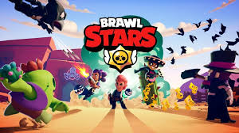
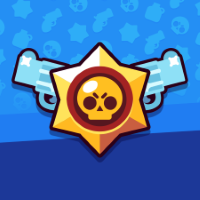

Brawl Stars est un jeu vidéo mobile développé et édité par le studio finlandais Supercell. Il est sorti en 2017 sur iOS et Android. Brawl Stars est un jeu de combat où le but est de battre d'autres joueurs, avec un système de récompense et de classement.
Date de sortie initiale : 15 juin 2017
Mode de jeu : Multijoueur
Développeur : Supercell
Genres : Arène de bataille en ligne multijoueur, Jeu de tir, Jeu en ligne massivement multijoueur
Plates-formes : Android, iOS
Nominations : BAFTA Games Award for EE Mobile Game of the Year
Cliquez sur n'importe quelle image pour accéder au site officiel de brawlstar.
